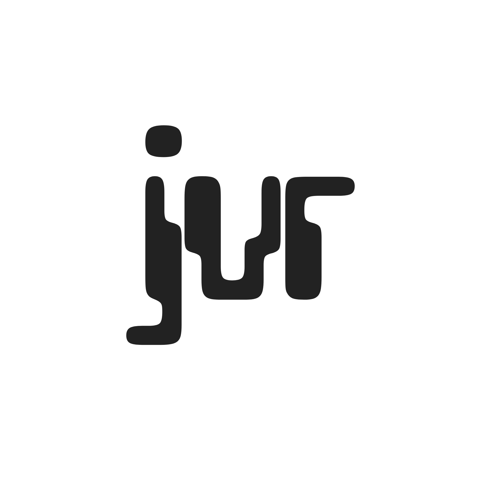
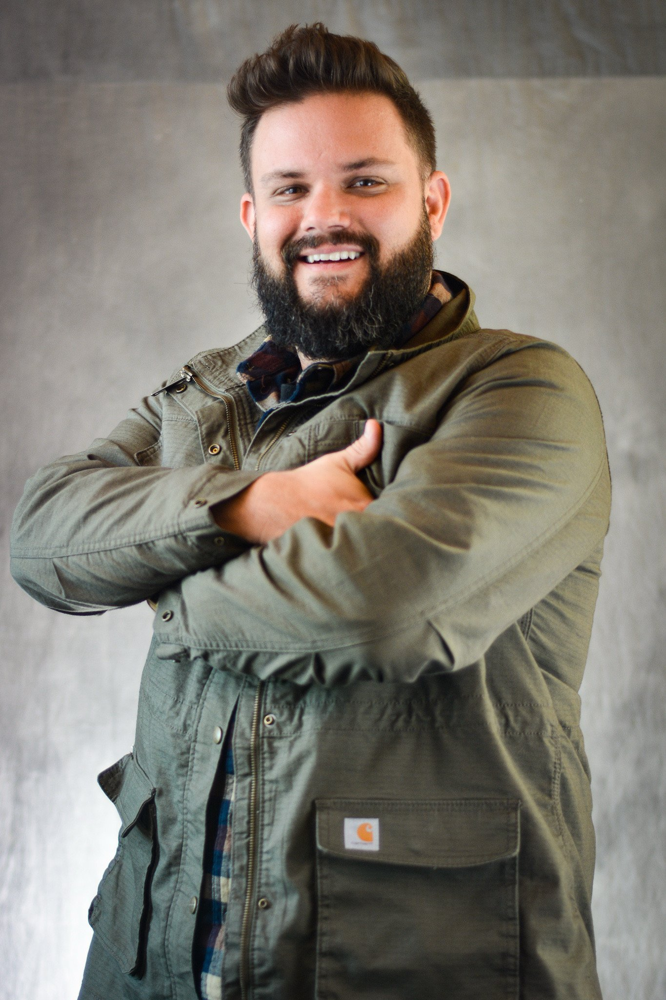

I write. I think in systems. I want to build products.
Targeting product management at design-led technology companies

BackgroundTechnical writer and content strategist based in Portland, Oregon. B.S. in Technical Communication (UX) from Arizona State University. Actively transitioning toward product management at design-led technology companies.
The through-line across everything here, the documentation work, the research projects, the content strategy, is a consistent interest in how information is structured, who it's for, and what it's trying to do. That interest is what's pulling toward PM.
ProfessionalAt Ledger, the work spans technical documentation, knowledge base architecture, AI support content strategy, security content, and cross-functional coordination with product and support ops teams. At Simple Finance before that, one of the first all-app, no-branch banks in the US, I led content strategy, help center documentation, product writing, and persona development built from real user research.
Both roles involved working directly with product teams to make decisions about what gets built, what gets written, and how users experience information at the moments that matter most. That work isn't separate from product. It is product.
AcademicThe ASU coursework included here was selected specifically because it demonstrates PM-adjacent skills: usability research, audience analysis, proposal writing for real clients, and structured persona development grounded in actual participant data.
Product teams and hiring managers at design-led technology companies. The case study format and overall direction are shaped by this audience. The goal is to show PM-adjacent thinking, not just writing samples.
If you're a recruiter or hiring manager, the Work section is the right starting point. If you're a fellow practitioner who found this somehow, the Study section has the methodology.
CurrentlyBuilding toward a PM role. Open to conversations with teams who treat content, documentation, and product writing as part of the core product surface, not an afterthought.
How to Find Me